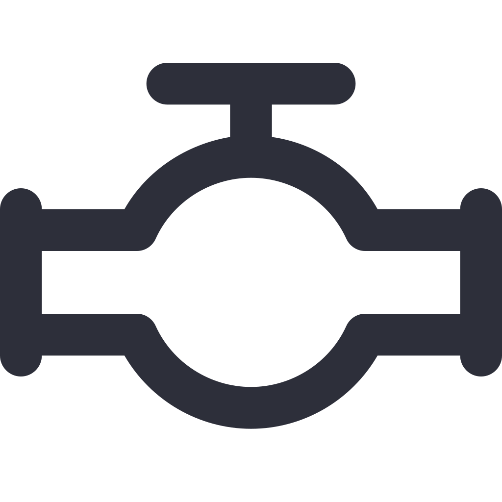

Seja bem vindo ao
Simux
Versão v
| Desenvolvido por Pedro Mota
Para começar, clique no botão abaixo ou tecle
Enter

Fazer uma simulação
Consulte o repositório oficial no Github para mais informações em
https://github.com/pedrocmota/simux